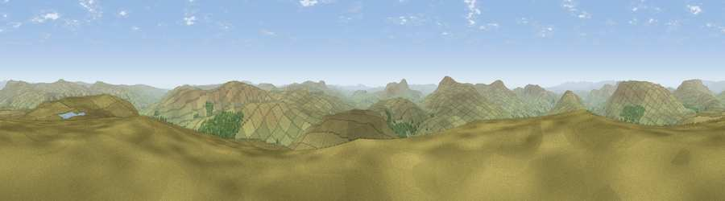

Great Knoutberry Hill
#3018 in England · top 3% of its area beats it · near GarsdaleThe view, rendered

A 360° render of this exact spot computed from the terrain model, tree cover and land cover — summer colours, afternoon light, calibrated against photographs of famous viewpoints. Real trees, hedges and buildings will differ in detail.
The panorama
Grey silhouette: terrain skyline in each direction (720 bearings, Earth curvature and refraction included). Dashed green: skyline with trees (+15 m) and buildings (+8 m) as obstacles. Blue strip: how far the ground is visible on each bearing.
Where the view opens
Wedge length = distance to the farthest visible ground on that bearing (vegetation-aware). Rings at 10, 25 and 50 km.
What fills the view
95% grassland · 5% woodland
Angular shares of the visible panorama (visual magnitude), not map area. Landscape diversity 0.10 (0–1 Shannon).
Key numbers
More beautiful places nearby
The staircase of upgrades: each row has a higher view potential than everything closer. Driving times are estimates from straight-line distance, calibrated against real road routing — check an actual route before setting out.
| Place | Direction | Drive | Score |
|---|---|---|---|
| Whernside | SW · 7 km | ~15 min | 79.9 |
| Warton Crag | WSW · 33 km | ~51 min | 83.2 |
| Viewpoint near Finsthwaite | W · 40 km | ~59 min | 90.3 |
| The Knoll | S · 400 km | ~382 min | 91.0 |
54.27962, -2.32596 · source: osm peak · position refined by local search. Computed location — check access rights before visiting.